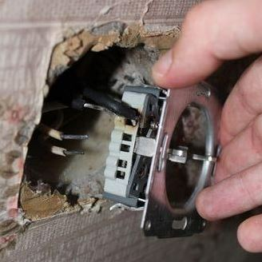
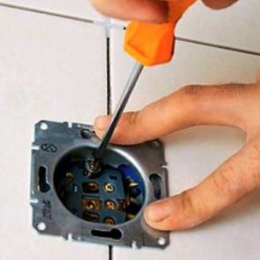
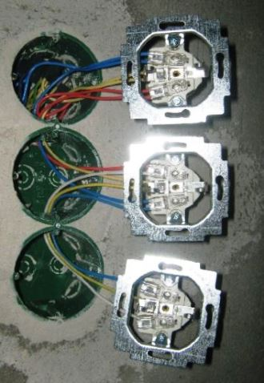

Качественный электромонтаж, Стаж 12 лет.
Тел. 8 904 642 08 57 Николай.

Стоимость замены розетки.
Каждый дом сегодня полон различной бытовой техникой: компьютером, телевизором, ноутбуком, микроволновкой, все эти приборы работают от питания. Что делать при перегорании гнезда, когда невозможно включить любимую передачу? Моя бригада выполняет работы любой сложности: установку, подключения электропатронов, замену перегоревших проводов, стоимость замены розетки каждому по карману. Перегорание патрона - обращайтесь ко мне, я сразу направлю профессиональных электриков, которые устранят неполадку.
Сколько стоит заменить розетку.
Количества розеток. |
1 |
3 |
8 |
От 12 |
Цена за штуку в руб. |
От 500 |
450 |
300 |
250 |
При планировании ремонта, обязательно надо заранее позаботиться о заключительном его этапе – установке гнезд. Пытаться установить их самостоятельно бесполезно и опасно, лучше обратиться к специалисту в данной области.
Мастер по замене розеток.
Моя бригада устанавливает одинарные, двойные, тройные патроны с заземлением. К установке ребята подходят крайне ответственно, а перед этим мастера определяют высоту, согласно нормативам, рассчитывают максимальный ток, который будет проходить через нее. Все зависит от типа помещения, где устанавливается гнездо, подбирается нужный вид. Например, для ванной подойдет только влагозащищенная, для стиральной машины – с трехжильным кабелем и заземлением.
Нельзя использовать удлинители, подключая энергоемкую технику, т.к. он может просто перегореть, повредить технику. Итог - Вы не сэкономите на стоимости замены розеток, а оплатите еще помимо этого ремонт техники. Только квалифицированный электрик сможет правильно рассчитать максимальный ток, который сможет выдержать гнездо. Поэтому установку электрических приборов лучше всего доверить моим электрикам, которые без проблем смогут установить любые типы выключателей, гнезд, других устройств электрооборудования.
|  |  |
Если говорить про цены на услуги, стоимость замены розетки зависит от ее типа, назначения.
Моя бригада производит установку:
- телефонных розеток;
- телевизионных;
- компьютерных;
- различных сетевых выключателей и электроприборов.
Устанавливать самостоятельно такие вещи крайне опасно, всегда помните об этом. Иногда даже взявшись за замену обычной лампочки можно получить удар током, не говоря уже о замене сложных розеток. Перед работой с электричеством нужно обязательно обесточить систему.
Однако правильная работа патронов обеспечивает исправность электроприборов, а самое главное - безопасность. Неправильная работа приводит к замыканию, иногда даже - пожару. Поэтому при замене, установке гнезд нельзя экономить.
Особенность современных моделей с заземлением в том, что у них очень тугая вилка. Чтобы не вытащить вместе с вилкой провода, их нужно хорошо закрепить. Для вызова электрика, наберите наш номер, после звонка мастер приедет в оговоренное время на дом или в офис. Мы производим целый комплекс электромонтажных работ: замену кабеля, расчёт сечения кабелей под нужное гнездо, штробление стен, другие подобные работы. Поэтому говорить о ценах на замену розеток надо в каждом конкретном случае говорить персонально.
Команда моих ребят - электриков оказывает коммунальные услуги на высоком уровне уже более 20-ти лет. У нас можно заказать любую услугу, связанную с электричеством: монтаж оборудования и электроприборов, замену проводов или же простую установку розетки. На всю нашу работу предоставляется гарантия, а доступные цены смогут только приятно удивить каждого.
Наличие малыша в доме обязывает заранее позаботиться о безопасности. Нужно пригласить профессионального электрика для установки защиты от проникновения. Помимо специальной защиты наши электрики сделают при необходимости монтаж узла защиты, не подвергая опасности Вашего ребенка от поражения током, даже тогда, когда он дотронется до гнезда.
Поэтому если Вы не хотите лезть и чинить проводку – не надо, т. к. такие работы должны проводить профессионалы своего дела.
Что нужно для замены розетки?
Просто позвонить нам, мастер приедет сразу после вызова, устранит любую неполадку по доступной цене, при необходимости - научит пользоваться техникой так, чтобы избегать перегорания проводок и выбивания пробок.
 Поменять проводку в квартире.
Поменять проводку в квартире. 
Расценки на электропроводку квартир.
Провести электропроводку в новостройке.
Электромонтаж в частном доме.
Электрика в загородном доме.
Сколько стоит замена электропроводки в двухкомнатной квартире?.
Сколько стоит проложить проводку в 3 ком квартире?
Сколько стоит проложить проводку в четырех комнатной квартире?
Сколько стоит сделать внутреннюю проводку?
Стоимость штробление стен.
Электромонтаж двухкомнатной квартиры.
Замена электропроводки в панельном доме.
Электромонтаж проводов в бане.